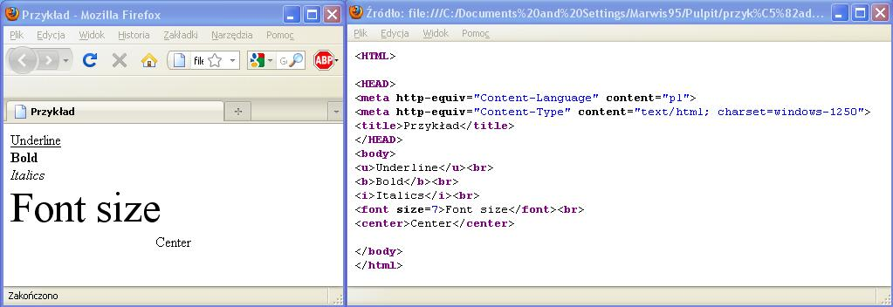

Teraz wymieniê podstawowe znaczniki zmieniaj¹ce w³aœciwoœci text'u.
(u)-z ang. underline-podkreœlenie(/u)
(b)-z ang. bold-pogrubienie(/b)
(i)-z ang. italics-kursywa(/i)
(font size=7)- z ang. font size-rozmiar czcionki, numer od 1 do 7(/font)
(center)-z ang. center-œrodek(/center)
Prawie ka¿dy znacznik musi mieæ swoje zakoñczenie, np. (u)...(/u),
wyj¹tek stanowi (br)-brake zastêpuje on Enter i nie ma odwo³ania.